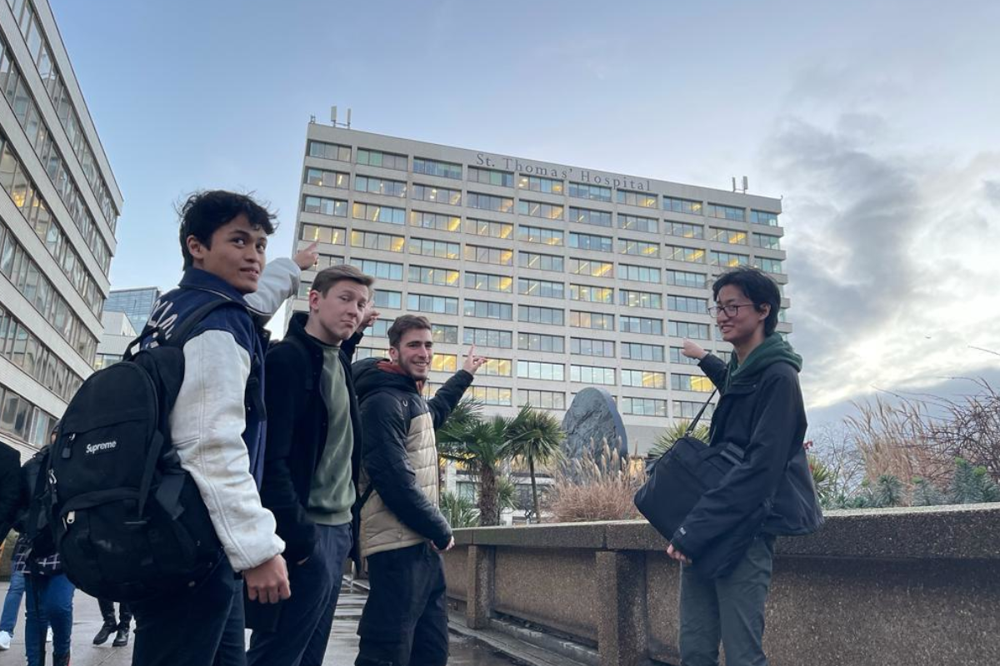

Client Consultation

The Client Meeting
During our meeting with Apian, we asked the finalised questions that we wrote prior to the meeting. We received either answers or notes for follow up. These were noted in the google Doc to log meetings that we created.Answers to our previous questions
Who exactly is going to use the application?
Estates & Facilities management staffwho organise, e.g. porters and , helideck personnel and in some cases, transport facilities, Laboratory staff, Pharmacy department staffWhat are porters?
Porters are staff who move patients and equipment around the hospital.
For the web application, is it going to be used on mobiles? Should we support mobiles, have usable designs for them?
Both mobile and desktop. Should be web based and PWA for mobile.What BLE devices are we going to use for location tracking?
UCL recommends Airtags; we could also use other BLE tags Airtags can only emit a pinging sound. To be confirmed and agreed upon after more research.What is already done/implemented from Apian side? Mostly thinking about the integration of our app into the existing system.
Nothing.What criteria are going to be used to prioritise work? Who provides the information on it?
Further research is needed to determine how porter workload is currently prioritised. A crash call that requires a porter to get blood packs for transfusion will always take priority above anything else.Prioritisation criteria will be determined by medical need, incorporating: If sample is labelled as urgent or not by the clinician, required turnaround time e.g. renal samples need to be delivered to a lab by 2pm to ensure same day results vs another sample that can wait for next day delivery, time-related payload constraints e.g. an item needs to be temperature controlled and the packaging only can keep it at a certain temperature for X hrs so must be delivered before the cold chain is breached.
Then we can add other layers such as: Prioritisation between samples and other
porter work, Travelling salesperson problem - should a lower priority item be
collected on the way to a higher priority item if timing is not significantly
affected?
Capacity of the drone (a lower priority item may fit in the next incoming
drone while a more urgent item can only fit in an empty drone that’s coming
in next) - this implies higher volume